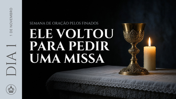

Tarde com Maria · Semana Especial de Oração pelos Finados
Thumbnails das lives · 1 a 8 de novembro
Primeira thumb da série, feita para aprovação antes de produzir as outras sete. Imagem gerada no Grok e montada no Canva com a identidade do e-book.
Dia 1 · aguardando aprovação

Como aparece no celular

O que fica fixo nas 8 thumbs
Faixa lateral do e-bookAzul-acinzentado #c8d1d9, 240 px à esquerda, igual às páginas internas do e-book.
Selo "DIA X" e dataVertical, na serifa do e-book, cinza #545454. A data da live fica acima, na mesma linha de leitura.
Coroa do Tarde com MariaSempre no pé da faixa, na mesma posição e cor do e-book.
Head principalCaixa alta, serifa do e-book em negrito, branco, até 3 linhas à esquerda da imagem.
Linha de apoio"Semana de oração pelos Finados" acima da head, em azul-acinzentado.
ImagemObjeto principal à direita e lado esquerdo escuro para o texto. Do Dia 1, mais escuro, ao Dia 8, mais luminoso.
Próximos dias, após aprovação
| Dia | Head principal | Imagem a gerar |
|---|---|---|
| 2 · 2/11 | 3 HORAS = 300 ANOS | Frade capuchinho em silhueta num corredor de hospital com luz fria |
| 3 · 3/11 | ELA VIU O IRMÃO NO PURGATÓRIO | Bacia de água com luz e uma mão estendida |
| 4 · 4/11 | NENHUMA PEGADA NA NEVE | Porta de convento entreaberta, neve intocada, luz quente de dentro |
| 5 · 5/11 | O PURGATÓRIO É UM FOGO DE AMOR | Chama em close com um fio dourado atravessando |
| 6 · 6/11 | ELA VIU UMA ALMA SER JULGADA | Santa Brígida escrevendo, raio de luz do alto |
| 7 · 7/11 | OS 3 NÍVEIS DO PURGATÓRIO | Escadaria escura embaixo e dourada no alto |
| 8 · 8/11 | CADA ORAÇÃO LIBERTA UMA ALMA | Hóstia elevada em contraluz dourado |
Prompt usado no Grok, Dia 1
Grok Imagine, modo Qualidade 2.0, proporção 16:9. Escolhida a 2ª de 4 variações e tratada localmente: 1920×1080, sombras levemente frias e escurecimento à esquerda para leitura do texto.
Ver prompt
Cinematic photograph of an ornate antique gold chalice standing on a stone Catholic altar covered with white linen, a single lit beeswax candle beside it as the only light source. Deep black background dissolving into darkness, dramatic chiaroscuro, warm candlelight glinting on the chalice rim, faint cold blue-grey ambient tone in the shadows. Sober, contemplative, mournful mood for a Mass for the souls in purgatory. Chalice and candle placed in the right third of the frame, the left half is empty dark negative space. Low camera angle at altar height, shallow depth of field, 50mm lens, fine film grain, photorealistic, no people, no text.